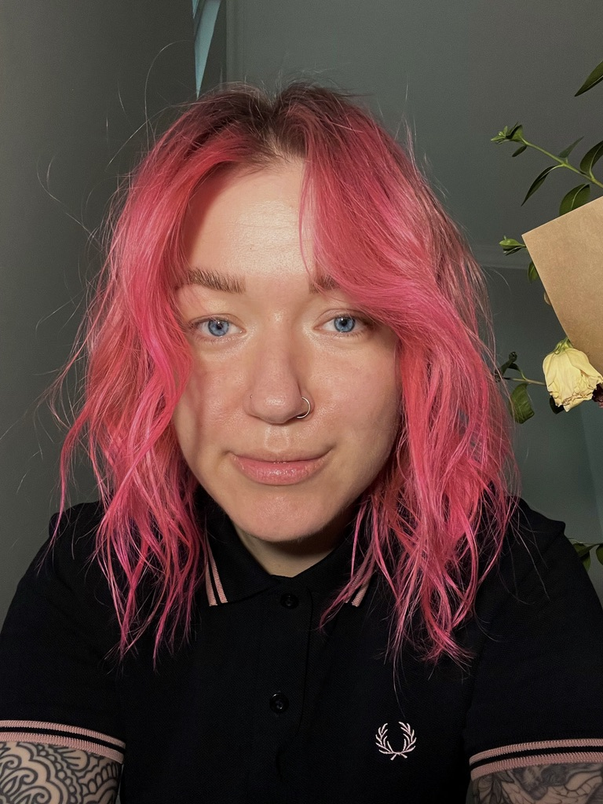

Maria Kolesnikova
Product manager
Professional summary
I've been in the product management game for 3 years, focusing on upping conversion rates, driving revenue, slashing costs, keeping customers happy and coming back for more, and pushing up that net promoter score along with customer satisfaction. I'm all about building strong relationships with customers and coworkers, and providing top-notch user experience. Plus, I'm always down to roll up my sleeves and do whatever it takes to deliver real value to our users.
Product Manager - Bright Security, Israel (remote)
July 2022 - October 2023
- Increase signup-to-scan conversion rate by 17% through the development of an onboarding wizard.
- Boosted revenue by 10% and brought in new clients by revamping the reporting feature.
Product Manager - Helping To Leave, Georgia
March 2022 - November 2022
- Boosted the number of donations by 10% by improving the website's UI.
- Cut monthly donation collection time by 40% with Stripe integration.
- Speed up delivery time to 2 weeks by building all team processes from the ground up.
Product Manager - Koshelek, Russia
November 2020 - May 2022
- Increased customer retention by 35% and Net Promoter Score by 10% through the development of in-app chat.
- Reduced ticket costs by 17% and boosted customer satisfaction by 11% by rolling out a new CRM system for customer support.
- Saved 30% on customer support costs by creating an AI chatbot.
Education
- Peter the Great St.Petersburg Polytechnical University, Russia
Master Degree, Project Management, 2020.
Certificates
- Certified SAFe® 6 Product Owner/Product Manager, Scaled Agile, Inc., 2024.
- SQL For Data Science, University of Michigan, 2023.
- Python For Everybody Specialization , University of Michigan, 2023
Skills
- Product Management (Strategy, Roadmap, Prioritization, Discovery)
- Analytics (Amplitude, Mixpanel, SQL, Python, Excel)
- UX (User Research, Prototyping, Figma, FullStory)
- Jira, Confluence